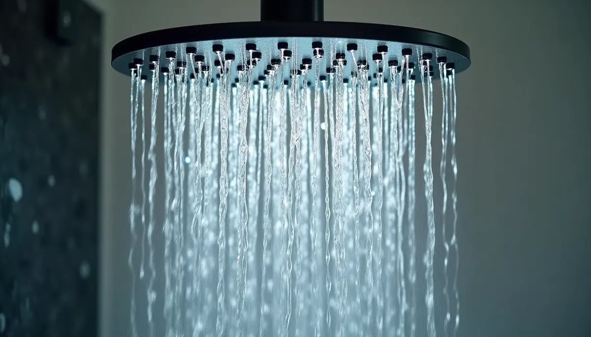
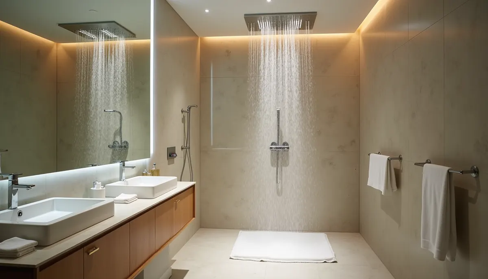
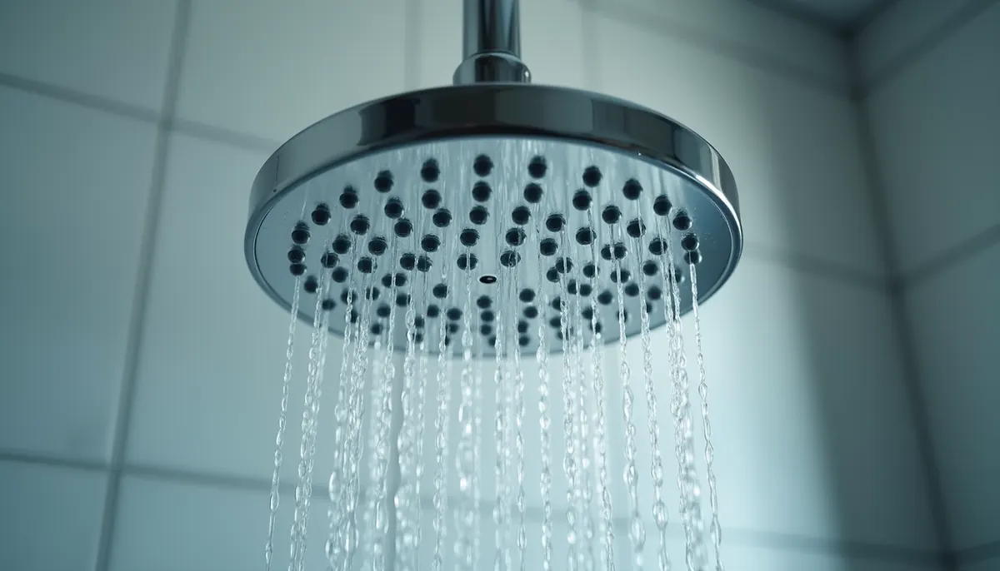

There's nothing quite like stepping into a luxurious shower experience designed by Angle Stop Plumbing, especially with multiple showerheads. Picture this: warm water cascading from above, invigorating jets that massage your back—it's like having your own spa retreat right in your bathroom. But to truly enjoy this experience, one critical aspect needs attention: the size of your supply pipes.
Why Does Pipe Diameter Matter for Multiple Showerheads?
Think of your plumbing system like a highway for water. If you have a narrow road (smaller pipes) trying to accommodate heavy traffic (multiple showerheads), you'll face congestion, slowdowns, and a disappointing shower experience.
Each showerhead has a specific water requirement for optimal performance. For example, a standard rain showerhead typically needs a flow rate of about 2.5 gallons per minute (GPM), while body jets might require around 1.5 GPM each. If your supply pipes are undersized, they can't meet the needs of all these fixtures, resulting in weak pressure and a subpar shower.
Larger pipes ensure a robust flow to all your shower systems. Whether you prefer the soothing rain-like experience or rejuvenating massage jets, a good water flow is essential for an enjoyable shower.

Adequate Water Flow
Efficient plumbing by Angle Stop Plumbing ensures that every fixture receives the right amount of water. With multiple showerheads, it's vital to deliver enough flow that accommodates all demands simultaneously.
For instance, if your setup includes a rain showerhead alongside two side jets, each needs ample water to perform well. Pipes with smaller diameters restrict this flow, resulting in one or more heads not working properly. In contrast, using larger pipes allows for a generous supply of water, enhancing your comfort and satisfaction.
Additionally, investing in larger diameter pipes not only benefits your existing fixtures but gives you room to grow. If you decide to add more showerheads or features in the future—like a handheld shower or additional body sprays—your plumbing will already be up to the task, saving you time and money.
Consistent Water Pressure
Imagine one showerhead blasting while another barely dribbles. This imbalance is a common issue when plumbing uses undersized pipes. Inconsistent water pressure can turn a rejuvenating shower into a frustrating experience.
Larger diameter pipes help maintain steady water pressure across all outlets. This ensures that all showerheads function properly without sudden fluctuations. Maintaining consistent pressure enhances your shower experience while also helping to extend the lifespan of your fixtures. For example, showerheads typically perform best at 40-60 psi. If pressure is too low, it can lead to wear and tear.

Selecting the right pipe size ensures superior functionality and prolongs the life of your entire plumbing system.
Temperature Stability
Another vital aspect of multi-head showers is the ability to maintain temperature stability throughout your bathing experience. When multiple heads draw water, smaller pipes can cause noticeable temperature fluctuations, especially if a toilet is flushed or another faucet is in use.
Larger pipes effectively buffer these demands, keeping your shower temperature steady and preventing sudden blasts of hot or cold water. For example, a well-sized system can help maintain a consistent temperature variation of less than 2 degrees Fahrenheit, creating a pleasant and relaxing environment for your shower.
Without adequately sized pipes, every shift in your household's water usage can disrupt your shower. If someone else uses water, you might face a sudden chill during a warm shower, which can be jarring. Properly sized pipes combat this issue, letting you enjoy your bathing experience without surprises.
Preventing Water Hammer
Water hammer is that annoying banging noise you might hear in your pipes when flow changes abruptly, often due to inadequate pipe sizing. Not only is it irritating, but it can also signal potential issues with your plumbing that may need fixing.
Larger pipes can effectively absorb changes in flow better than smaller ones, reducing the chances of water hammer. This noise occurs when water shifts direction abruptly, creating pressure surges that can damage fixtures over time.
If you have experienced this disruptive sound, knowing that the right pipe diameter can alleviate it provides peace of mind. Preventing water hammer contributes to the overall efficiency and longevity of your plumbing system.

The Aesthetics of Pipe Selection
Beyond technical benefits, there's also an aesthetic side to consider. The shower experience combines function and creating a calm, beautiful environment in your bathroom.
When designing your multi-head shower system, the visible parts like showerheads and controls usually grab attention. However, the pipes and plumbing system are essential for delivering the luxury you desire.
Choosing quality plumbing solutions with larger diameter pipes helps ensure a seamless, refined look for your shower setup. When your plumbing operates efficiently and quietly, it enhances the overall experience, letting you focus on the relaxation your bath offers.
A multi-head shower can lose its allure if interruptions from noise or pressure keep reminding you of plumbing flaws. By upgrading to larger pipes, you are making a wise investment that pays off in performance and aesthetics.
Elevating Your Shower Experience
As we've seen, the importance of the right pipe diameter for a multi-head shower cannot be overstated. From ensuring sufficient water flow to maintaining steady pressure and temperature, larger pipes unlock a luxurious experience.
Investing in proper pipe sizing is essential for creating that spa-like retreat in your bathroom. Whether it's soothing water cascades or invigorating jets that massage your body, smart plumbing choices make all the difference.
Don't let undersized pipes limit your enjoyment of one of life's simple pleasures. Embrace the chance to transform your daily routine into a luxurious experience, all while knowing your plumbing operates efficiently.
Incorporating larger diameter pipes into your multi-head shower setup will enhance the immediate experience and contribute to the longevity and functionality of your plumbing system. Elevate your bathroom today and indulge in the upgrade you truly deserve, contact your plumbing shower experts at Angle Stop Plumbing to learn more.